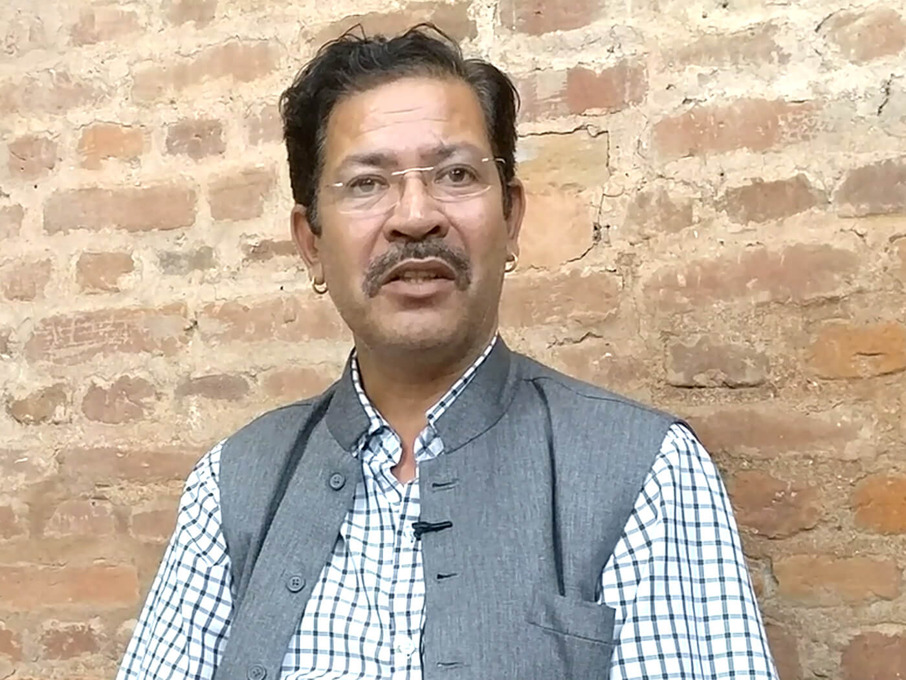

Wonderful Waling
You can immediately download aling looks like an ordinary municipality, not much different from any other mountain town in Nepal. But it is poised for complete transformation, if the plans of its passionate mayor are anything to go by. Dilip Pratap Khand is a descendant of the royal family of this Syangja principality, one of the last to fall to Prithvi Narayan Shah’s conquests in the mid-18th century. His grandfather and father were both pro-democracy activists, and Khand won last year’s local election by a comfortable margin. The mayor is a graduate from Banaras Hindu University and exudes confidence, brimming with ideas to turn his hometown into a Smart City, with the slogan, Wonderful Waling. This is one of five municipalities of Syangja district, a two hour drive south of Pokhara along the Siddhartha Highway. Situated amidst lush, rolling hills by the Andhi Khola Valley, the land is fertile and famous for its rice. In fact, the name Waling is derived from a type of folk song about rice plantation called ‘Wali’. The central plank of Khand’s mayoral election campaign last year was the economic transformation of the municipality. He claims he refrained from campaigning aggressively and making lengthy speeches, preferring to portray himself as a doer rather than a talker.
“I briefly told people about my plans for Waling and urged them to exercise their discretion and will,” Khand says. He cultivated all-party support for his economic agenda, and seems to face fewer political obstacles than his counterparts elsewhere. Immediately after his election, the Municipality organised a workshop where it invited members of various political parties, winners and runners-up of the local polls and town planning experts. They discussed smart city models in India and other countries and formulated a 5-year strategy for Waling’s transformation. The two main planks of the strategy focus on tourism and agro products in each village, while the town will concentrate on planned urbanisation, waste management, transportation and innovation centres. Khand expects both to generate up to 12,000 new jobs. “We are already implementing a zero-waste policy and have made a profit of about Rs7 million this year alone just by processing waste, and we have plans to recycle waste plastic for road resurfacing,” he says. Khand’s longer-term vision is to turn Waling into a technological, industrial and touristic hub, and some of the work is already underway. Waling natives working as engineers in Singapore and elsewhere have been convinced to come home to set up innovation labs in schools so students can work on robotics and other gadgets to do chores like dishwashing and cleaning. The emphasis on hands-on education, Khand believes, will spur students’ creativity and orient them towards technology and business. He plans a Waling industrial corridor to produce cement and coal. Khand is one of the few mayors who have not been criticised for buying expensive motors or gadgets, often by imposing heavy taxes on local people. He follows Chanakya’s philosophy on taxation: just like how a honeybee extracts just the right amount of honey from the flowers so both survive and thrive, local governments should collect minimum taxes, and give them back to the people. Khand is distributing the taxes among local farmers and entrepreneurs as seed money to produce fruits and vegetables. He is also planning to set up agro marts through which Waling’s produces can be directly sold to markets in Pokhara, Butwal, Bhairawa and Kathmandu, by eliminating middlemen. Because transparency and efficiency are key to good governance, Khand wants to deliver, through a mobile app, all 70 public services that the municipality is supposed to provide to its residents. “We are collaborating with a mobile app developer, and will give people tutorials on using the app. We will stop using paper application forms within a year,” he says. Asked whether or not he is biting more than he can chew, Khand’s reply is typical of the man: “We are a full-fledged government with rights to formulate laws. We can accomplish a lot if we have the will, the management skills and effective teamwork. Five years is a lot of time in which to completely transform a place.”